Resumen
La mayoría del material está bien. Los retratos de estudio salen “poco nítidos” en la medición porque la piel y la tela son lisas, no porque estén borrosos. Las fotos oscuras son de tela negra, con buena exposición. Hay cuatro problemas reales:
| Archivo | Sección | Problema | Propuesta |
|---|---|---|---|
| Póster y video del hero en móvil | Hero | 720×1280, un recorte ampliado del video horizontal. En un iPhone se estira 1,64× y se ve blando. Además es la imagen más grande que carga primero (LCP). | Usar IMG_9019.MOV: video vertical nativo de 1080×1920 a 60 fps |
| Mapa estático de cobertura | Cobertura (móvil y respaldo) | 1000×1000 px; en pantallas retina se estira 1,5× | Regenerarlo a 2000 px desde el mismo diseño (no hace falta foto) |
| 38 fotos de galería en el visor | Dotación, explorador, proceso, Nosotros | El tamaño mayor es 1600 px. En el visor a pantalla completa en escritorio retina se estiran 1,26× | Exportar una versión de 2000 px desde los originales de cámara, que miden de 2700 a 5900 px |
| Video de confección | Proceso | 1280×720 a 1,6 Mbps, justo en el mínimo | No hay versión 1080p en el material: pedirla al cliente |
Reemplazos propuestos
A la izquierda, lo que hay hoy. A la derecha, la propuesta. Cada lado muestra la imagen completa y un recorte del centro al tamaño en que se ve en el dispositivo más exigente.
Hero en móvil: póster y video
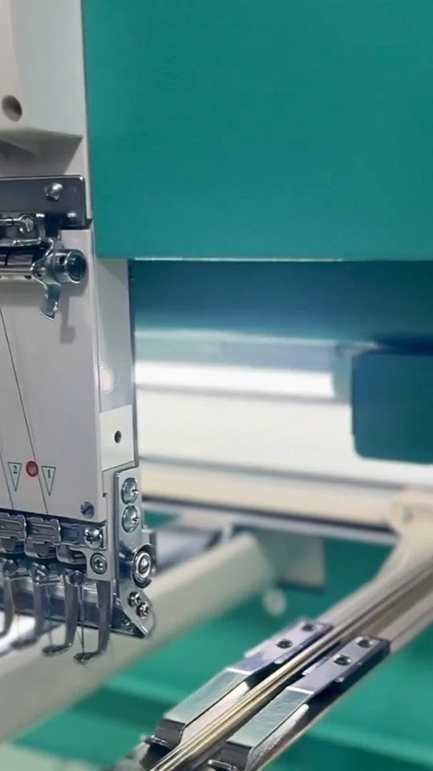
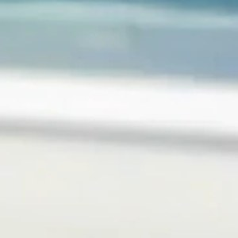
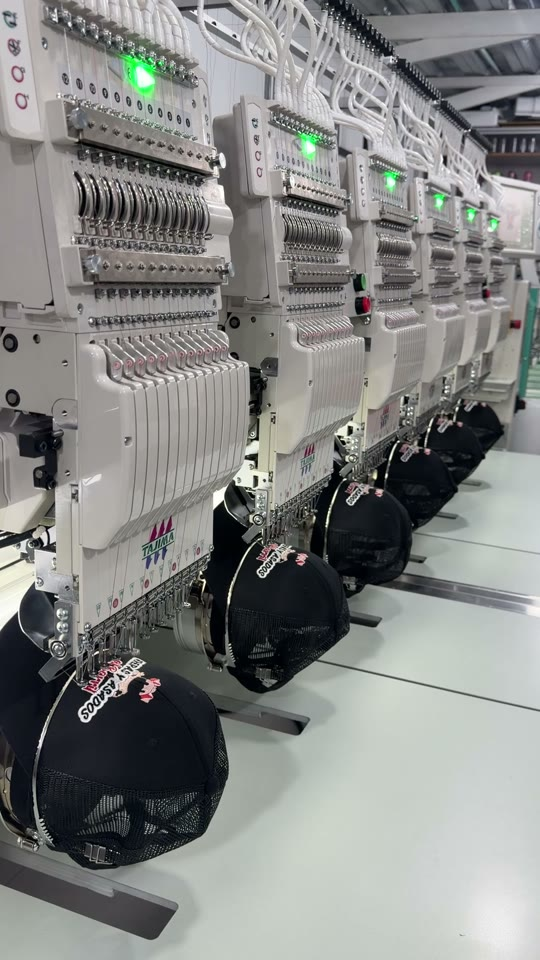
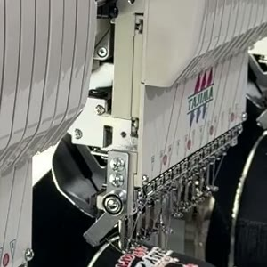
Motivo: el video móvil actual sale del horizontal: se recorta una franja de unos 600 px y se amplía a 720. IMG_9019 ya viene vertical y con el doble de resolución útil. Se exportaría a 720×1280 a 1,2–1,5 Mbps, con un póster de 1080×1920 que será la imagen LCP.
Mapa estático de cobertura
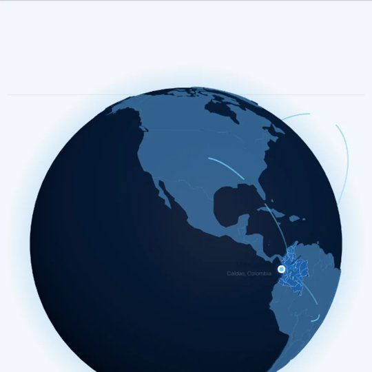
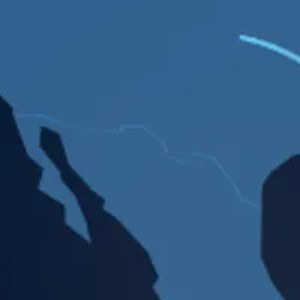
Motivo: en pantallas retina se estira 1,5× y los bordes de los países se ven difusos.
Fotos de galería en el visor a pantalla completa (38 fotos)
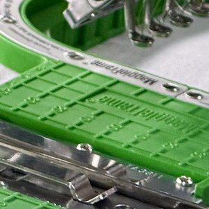
Motivo: no se cambia ninguna foto: se agrega el tamaño 2000 al srcset y al visor. Los 38 originales miden de 2700 a 5939 px de ancho, así que da para todos.
Nuevos que suman
Material bueno del AirDrop sin reemplazo directo. Al lado de cada uno va la sección sugerida.
Hero móvil
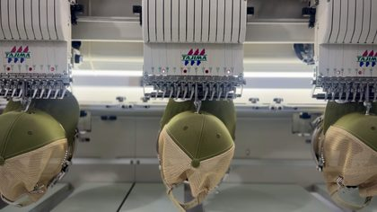
Proceso (video)
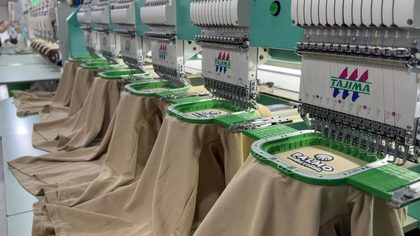
Proceso (video)
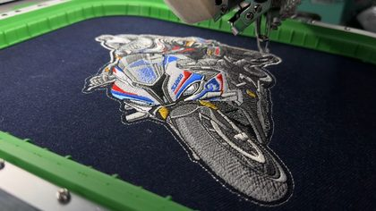
Bordado (video)
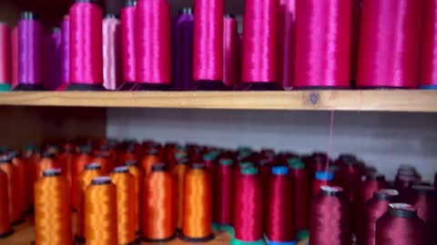
Nosotros (ambiente)
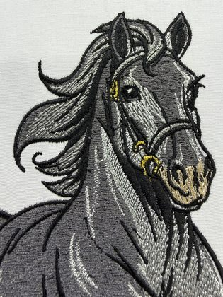
Bordado
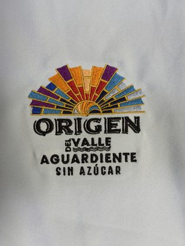
Bordado
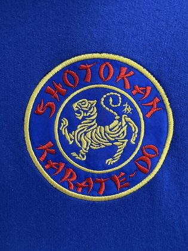
Bordado
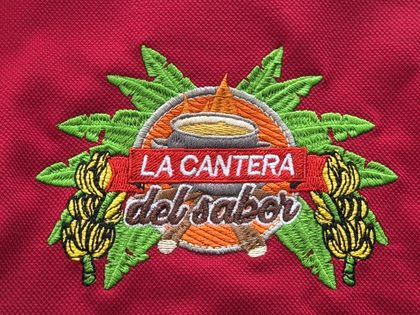
Bordado
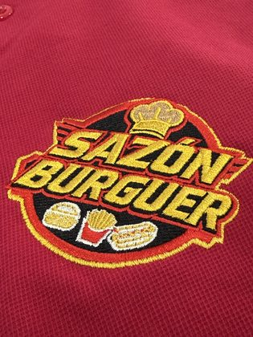
Bordado
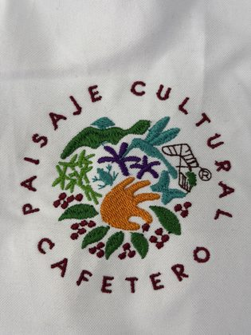
Bordado
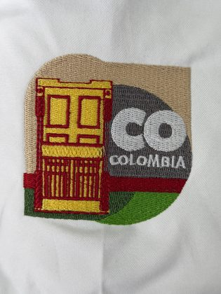
Bordado
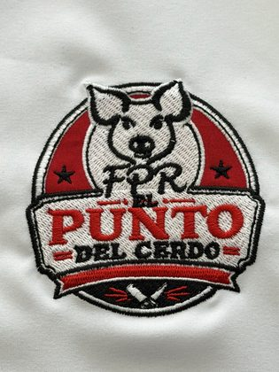
Bordado
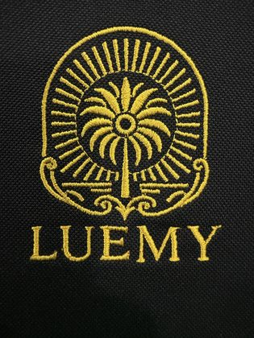
Bordado
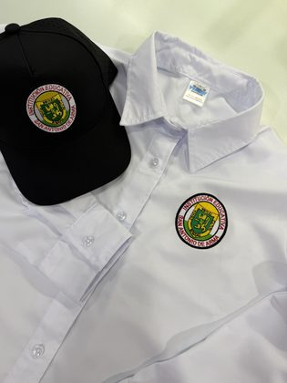
Dotación
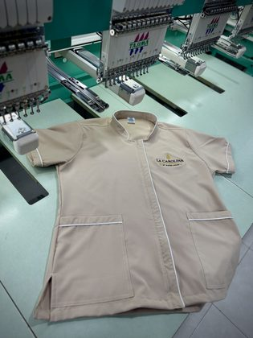
Dotación
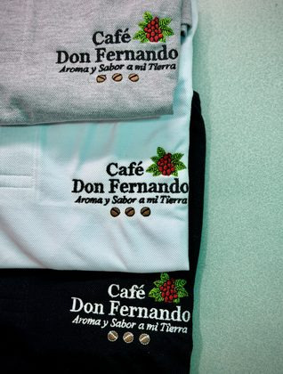
Dotación
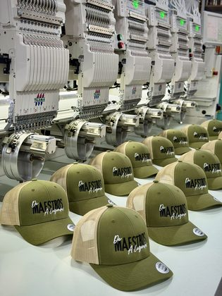
Proceso
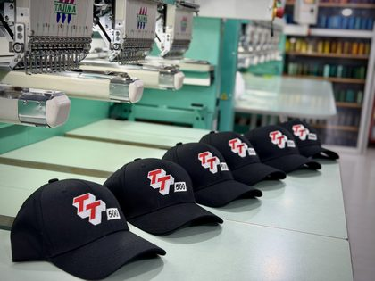
Proceso
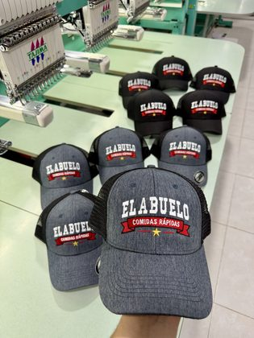
Proceso
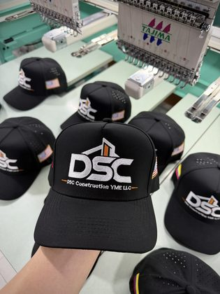
Proceso
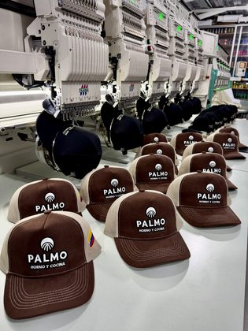
Proceso
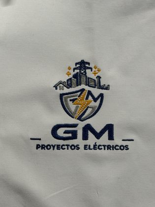
Clientes
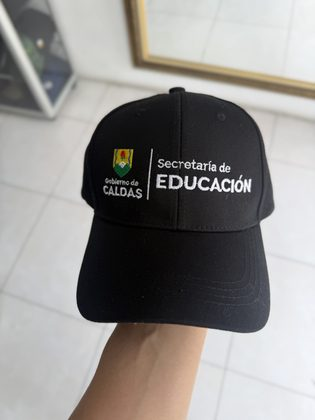
Clientes
Requieren confirmación antes de usar
Tienen un nombre propio visible. Por las reglas acordadas, no se publican sin permiso.
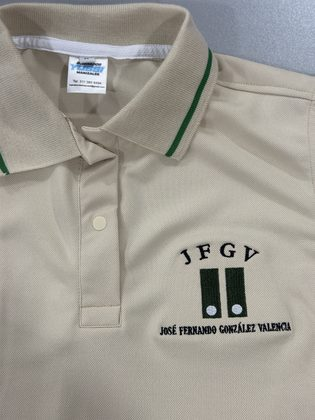
Nombre visible
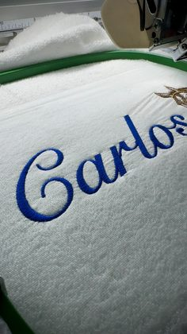
Nombre visible
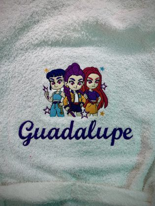
Nombre visible
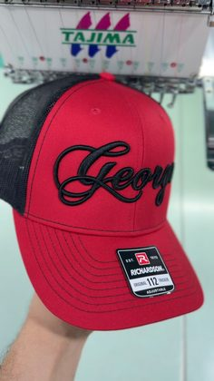
Nombre visible
No se encontraron menores con rostro identificable ni marcas de la competencia en el material revisado.
Sin reemplazo bueno: pedir al cliente
| Qué | Por qué | Especificación sugerida |
|---|---|---|
| Video de confección (máquina de coser) | El único que hay es 720p a 1,6 Mbps, y las tomas crudas de confección también son 720p | Horizontal 1080p o 4K, 10–20 s, trípode o mano firme, buena luz |
| Hero de escritorio en mayor resolución | El video y el póster actuales son de 1920 px; en monitores retina se estiran 1,5×. Se ven bien, pero no son nítidos | La misma toma de los 6 cabezales en 4K horizontal, 15 s, sin movimiento de cámara |
| Fotos nuevas de antifluido, industrial y escolares | El AirDrop no trae nada de estas líneas. Las actuales están bien, pero son pocas: entre 2 y 7 por línea | Prendas puestas o en maniquí, con fondo limpio y vertical. En escolares, sin rostros de menores |